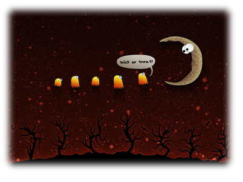

<!DOCTYPE html>
<html lang="ko">

<head>
	<meta charset="UTF-8">
	<meta http-equiv="X-UA-Compatible" content="IE=edge">
	<meta name="viewport" content="width=device-width, initial-scale=1.0">
	<title>switch</title>
	<style>

	</style>
</head>

<body>
	<script>
		let yoil = prompt("어느 계절을 좋아하세요? (1:봄, 2:여름, 3:가을, 4:겨울)", "1");
		switch (yoil) {
			case "1":
			case "봄":
				document.write("<h1>봄을 좋아하시는군요</h1>");
				break
			case "2":
			case "여름":
				document.write("<h1>여름을 좋아하시는군요</h1>");
				break
			case "3":
			case "가을":
				document.write("<h1>가을을 좋아하시는군요</h1>");
				break
			case "4":
			case "겨울":
				document.write("<h1>겨울을 좋아하시는군요</h1>");
				break
		}
	</script>

</body>

</html>
</script>
</body>

</html>